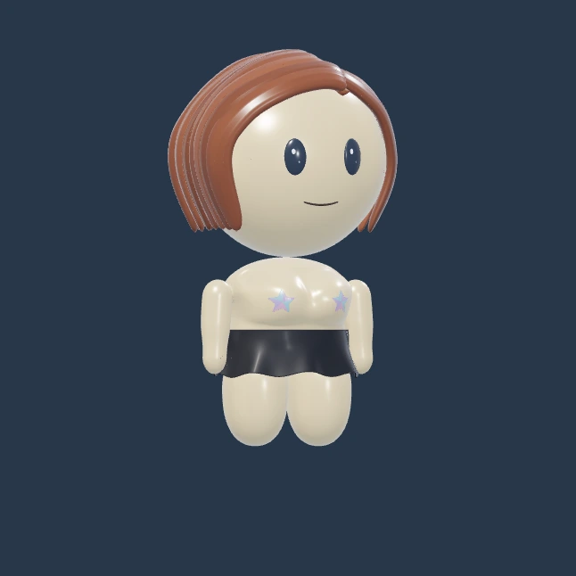
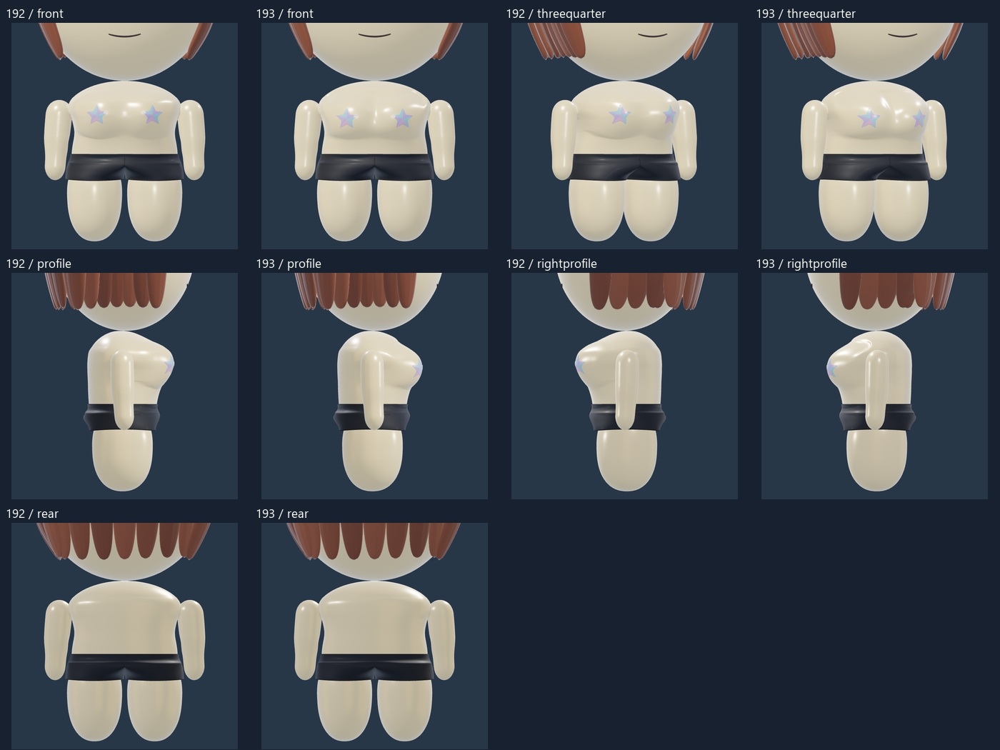
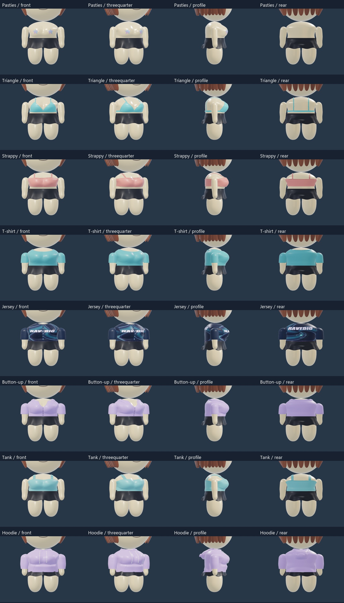
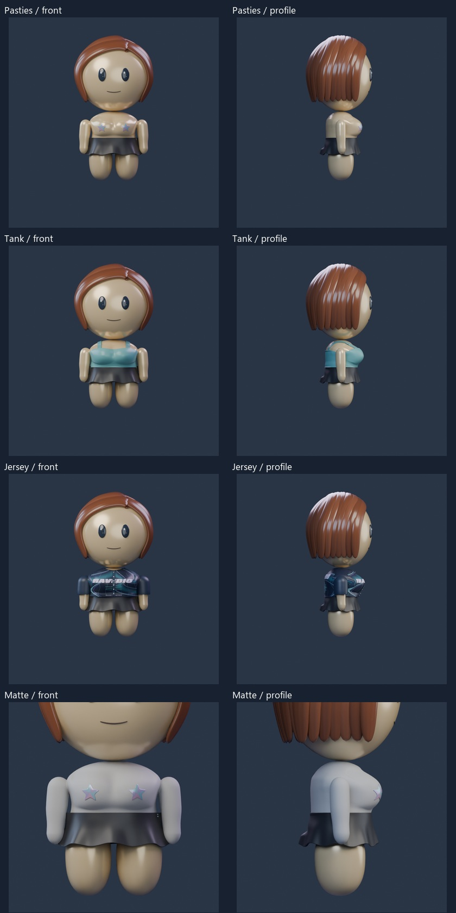
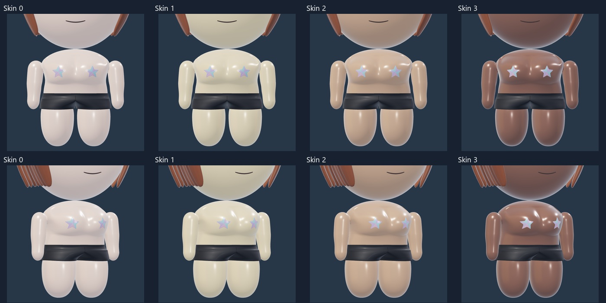

CHEST REFINEMENT -193
Softer chest contours
The feminine chest has clearer upper-center separation, lower fullness, less forward projection and smoother side transitions. All eight tops are fitted to the revised shape. Arms, hands, rear torso, waistlines, heads, hair, faces, skin tones and lighting are retained.

Rendered top referenceLoad 3D to mix outfits, rotate and zoom. Each build remembers its selections.
Drag to rotate, pinch to zoom, or choose a fixed angle. Hand studies are optional. Static top references show Rounded ends; the live model and PNG use your selected hands. The feminine chest and top fits are revised; heads, hair, faces, arms, bottoms, skin tones and fixed lighting are retained.
Chest: before and after192 /193

All eight tops

Saved Blender and matte views

Four skin tones

Scope and review
193 refines only the feminine anterior chest and affected top surfaces. Existing posterior torso, arms/hands, head/hair/face, waistlines and bottoms retain192. The masculine model is unchanged. Closed garments bridge the center contour; triangle and fitted tops follow it more closely. Pasties are reseated on the lowered fullness. No firmware, mobile, cloud or profile contract changes. Technical verification and visual self-review are separate from owner aesthetic acceptance.